Pesach: Matzah Dishes by Misha Rubin
Eating matzah is a command of the LORD to Israel during the feast of Pesach. A rich variety of dishes can be made from matzah. So the claim that kosher food is not tasty food is simply quite unfair. Chef Misha Rubin proves that it is not so!
Passover potato pancakes (with matzah meal)
LEVIVOT TAPUHEI ADAMA (Hebrew).
How to bake matzah: see here (video) and here.
Ingredients:
1. Two large potatoes (about 400 g)
2. One large onion (about 150–200 g)
3. Eggs (2)
4. Parsley (1 tablespoon)
5. Matzah meal (2 tablespoons)
6. Salt and pepper (to taste)
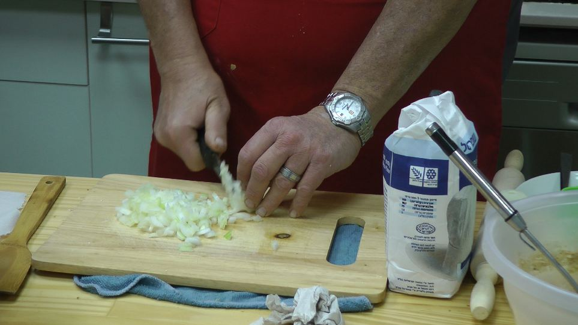
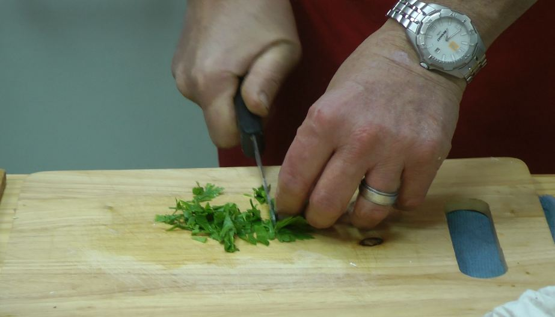
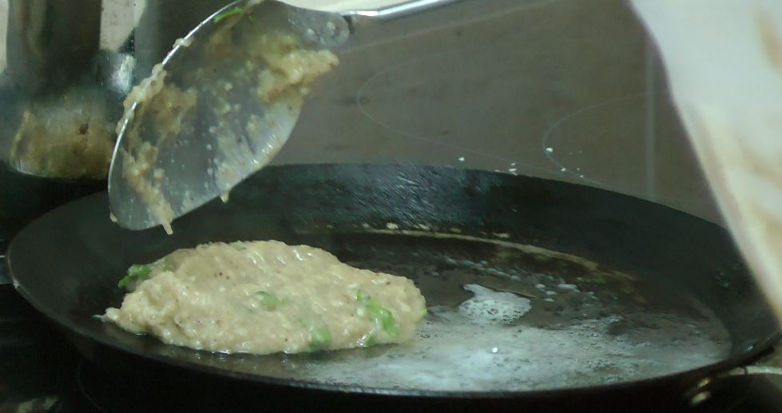
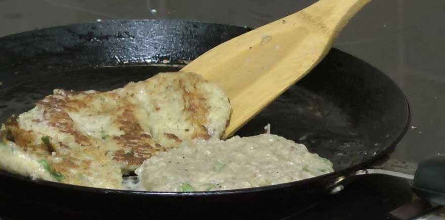
Method:
1. Grate the peeled potatoes and onion on a fine grater.
2. Add the eggs.
3. Add salt and pepper to taste.
4. Add the chopped parsley and the matzah meal.
5. Leave until the matzah meal swells (10–15 min).
6. Spread on the frying pan in a thin layer (about 0.5 cm).
7. Fry in a thin layer of vegetable oil (sunflower or soya; olive oil if you like, though it gives a particular taste).
8. Turn once, when the edges brown.
9. Fry until golden brown.
10. Serve with sour cream, or as a side dish with meat.
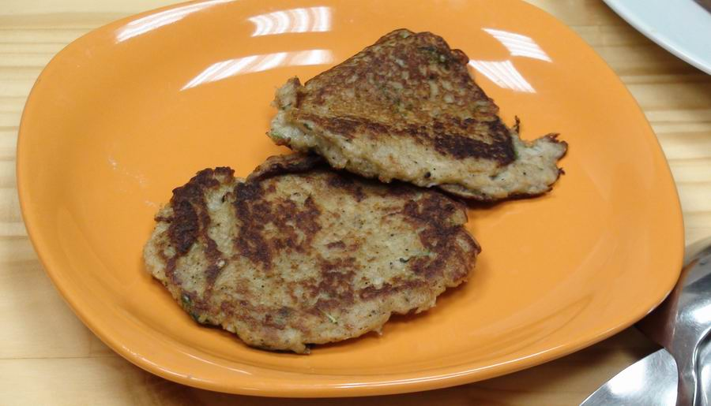
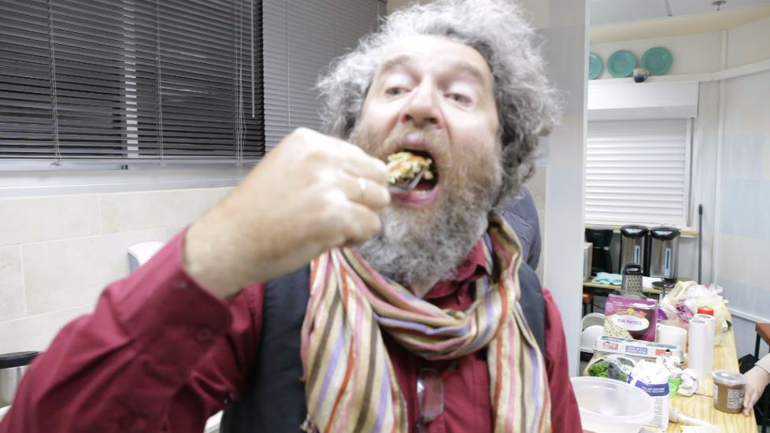
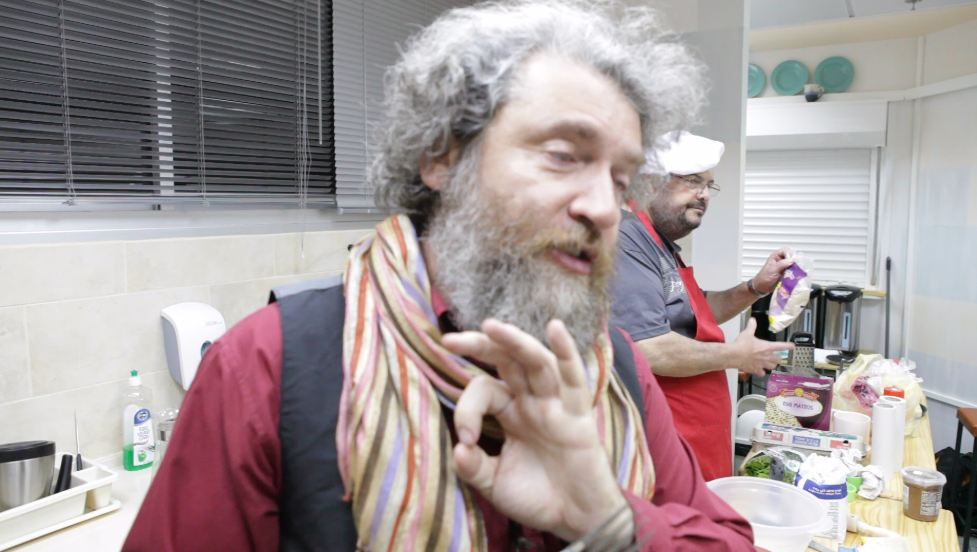
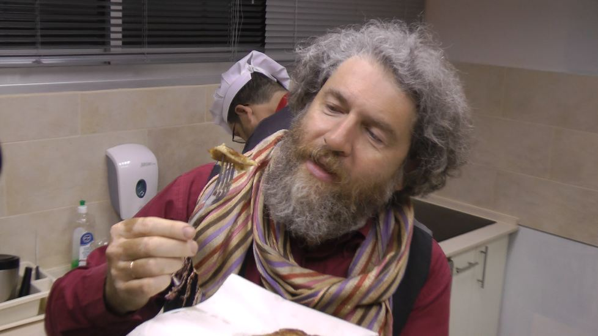
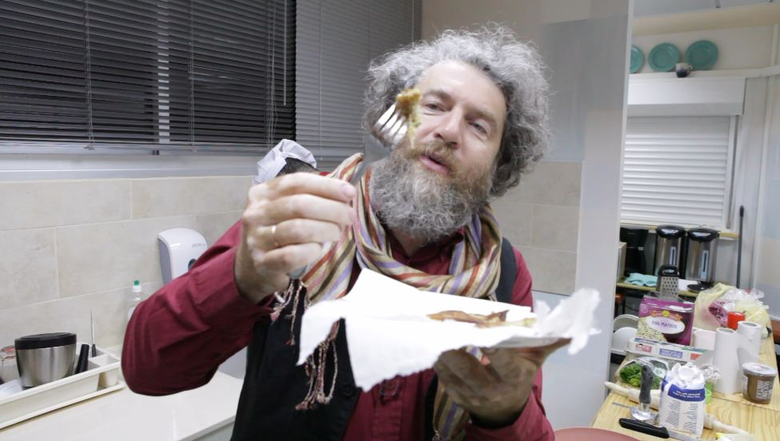
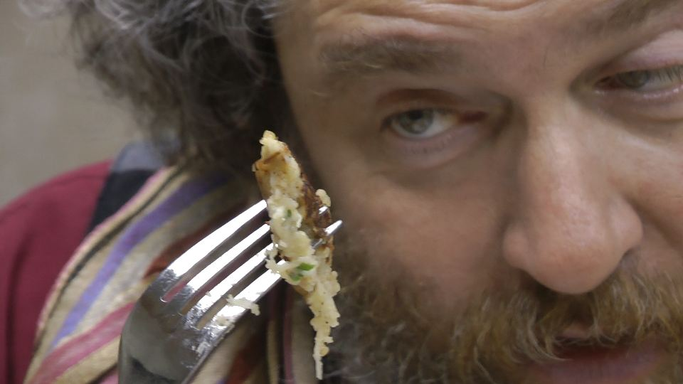
Chicken soup with kneidlach
Ingredients:
1. Matzah meal (250 g)
2. Egg (1)
3. Half a glass of boiling water
4. Margarine (25 g)
5. Salt and pepper to taste
6. Parsley (1 tablespoon)
7. Optional: 1 tablespoon of sun-dried tomato pesto
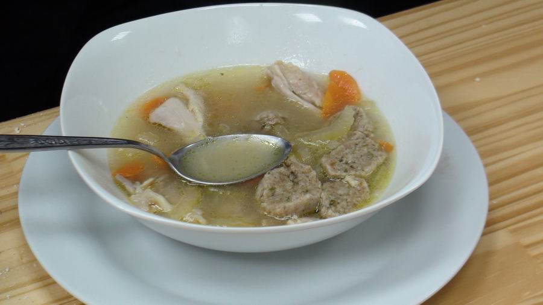
Method:
1. Put the matzah meal in a deep bowl and pour boiling water over it, stirring with a spoon.
2. Leave for 5–6 minutes.
3. Add the egg, margarine, salt, pepper and finely chopped parsley. The parsley can be replaced with pesto.
4. Mix well.
5. With wet hands roll into balls and drop them into boiling chicken stock.
6. Serve in the stock with pieces of chicken. Sprinkle chopped parsley or dill into the bowl.
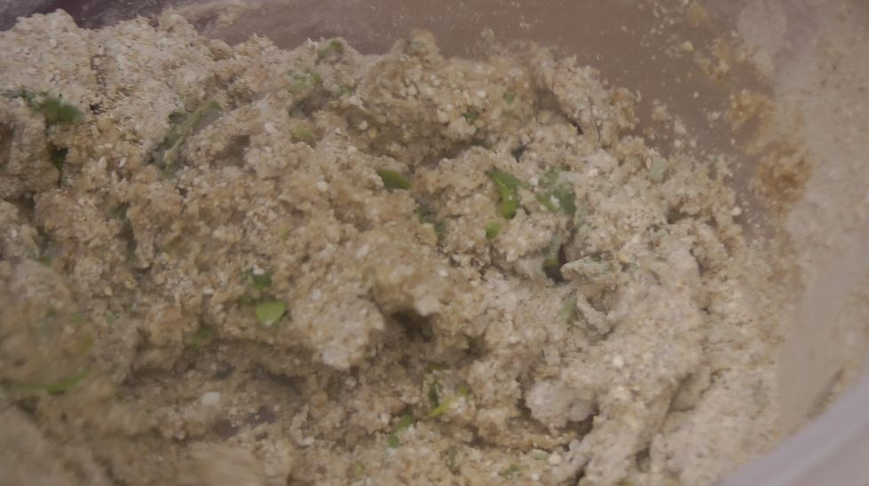
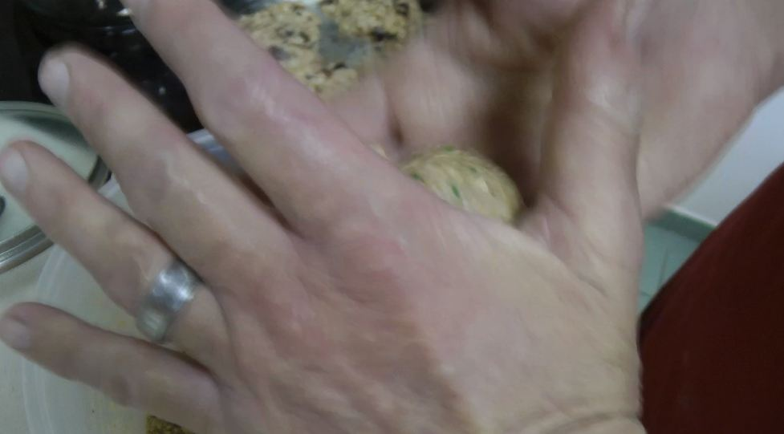
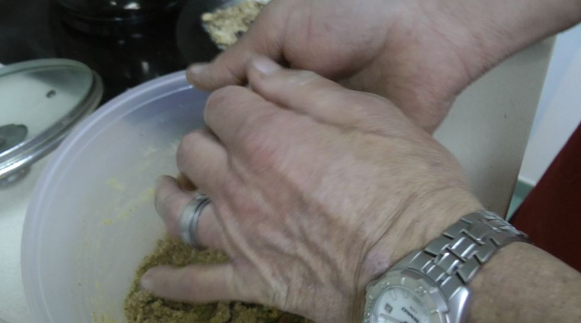
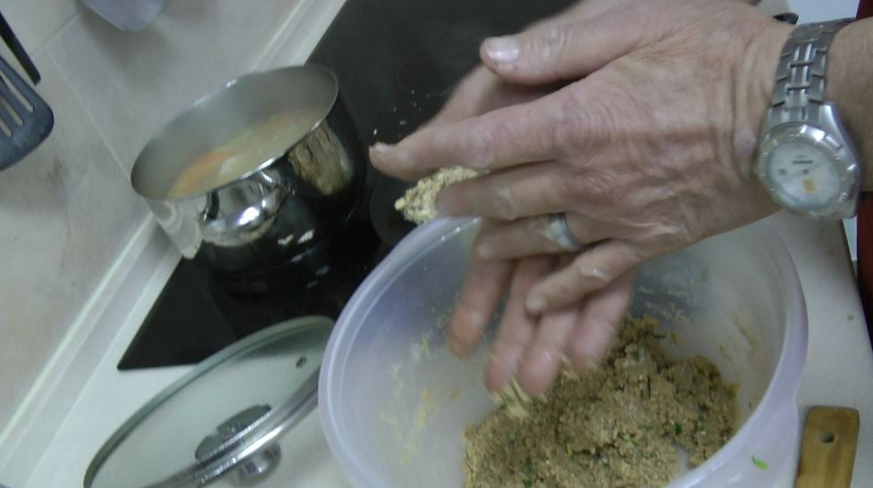
Matzah brei (matzah fritters)
Ingredients:
1. Egg matzah (4–5 sheets)
2. Eggs (2)
3. Slightly sour fruit (60–70 g of cranberries, raisins, dried apricots, prunes and the like)
4. Halva (100 g)
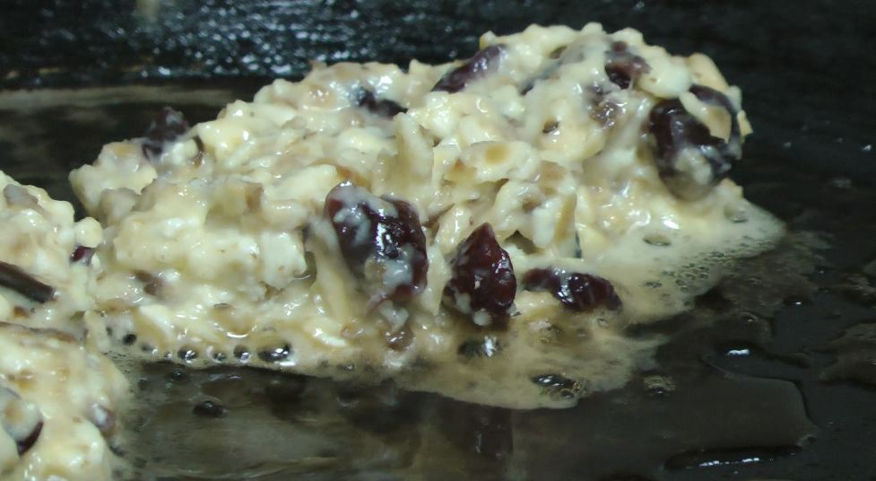
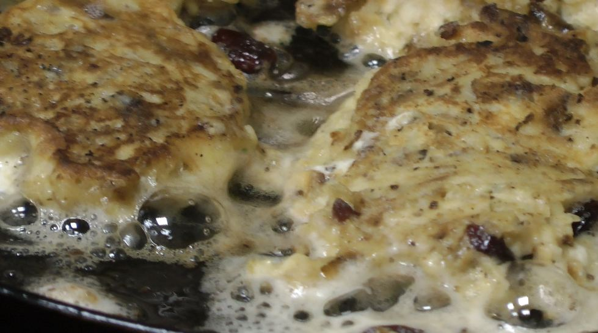
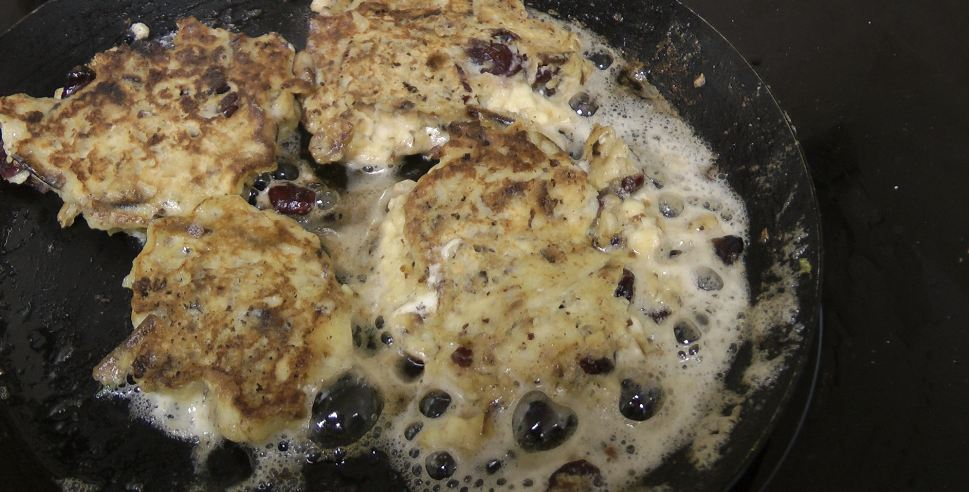
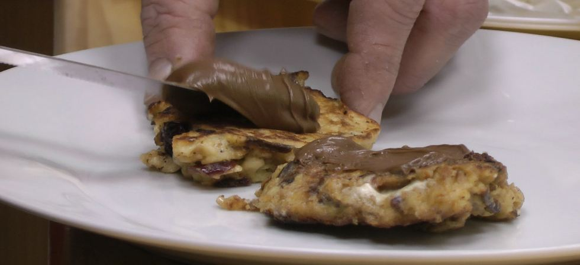
Method:
1. Break the matzah into small pieces by hand.
2. Soak in water or milk, depending on whether you will serve it with a dairy or a meat meal; 9% cream can also be used.
3. Leave for 10 minutes.
4. Squeeze out firmly by hand.
5. Put the mixture into a bowl.
6. Add the eggs.
7. Add the fruit (chopped beforehand).
8. Add the crushed halva (crush it with a rolling pin).
9. Mix well.
10. Fry in a hot pan in a thin layer of vegetable oil (turn 2–3 times) until brownish.
11. Serve warm, sprinkled with icing sugar, vanilla, finely chopped nuts, coconut and the like.

How to bake matzah: see here and here (video).
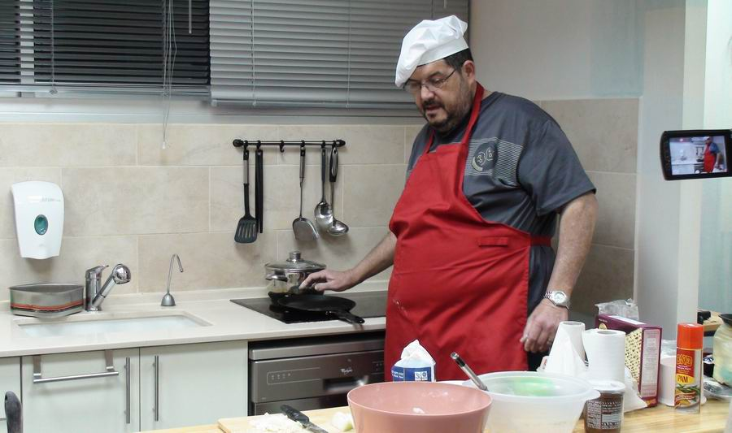
This is only a small part of what can be made from matzah and matzah meal for the Passover meal. All of it is completely kosher and VERY TASTY! Tested by me personally.
Author: Ephraim Kalish / Torah-Art
 Turn Us, and We Shall Be Turned!
Turn Us, and We Shall Be Turned! Unleavened Bread That Came Down from Heaven
Unleavened Bread That Came Down from Heaven May a Woman Blow the Shofar?
May a Woman Blow the Shofar?